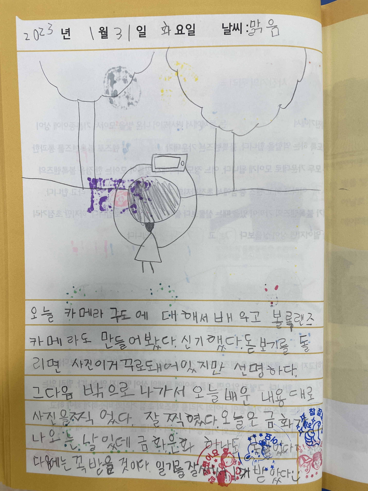

제21기 온드림스쿨 다빈치교실
📸포토뽀또 그림 일기장📸
💡 안녕하세요, 포토뽀또(구민지, 배윤지, 윤정임, 장우영) 입니다. 저희는
충북 보은군에 위치한 속리초등학교에서
'찰칵, 우리가 만드는 스튜디오'라는 주제로 사진,
영상에 관한 다양한 수업을 진행했습니다. 이 웹 사이트는 모바일 뷰어
전용으로 2023년 2월 24일 금요일에 진행된 제21기 온드림스쿨 다빈치교실
활동 발표회에서 속리초 아이들이 매 수업이 끝난 후 작성한 그림일기를
소개하기 위해 제작되었습니다. 감사합니다. 😊
💌 1일차(1/30) 💌
📆 2023년 1월 30일 월요일 날씨 : 맑음
이름표 꾸미기는 뭘 할지 모르겠어서 막 그렸는데 생각보다 괜찮게
나왔다.

📆 2023년 1월 30일 월요일 날씨 : 맑음☀
오늘 강당에서 단체 줄넘기를 했다. 처음엔 어려웠는데 계속 하다
보니까 잘됐다. 연습을 계속 계속하다 보니까 너무 잘 됐다. 성공을
해서 은화를 2개나 받았다. 너무 뿌듯했다.

📆 2023년 1월 30일 월요일 날씨 : 화창함
오늘 다빈치 교실에서 이름표를 만들고 강당에 가서 줄넘기
포토제닉을 했는데 힘들면서도 재미있었다. 은화는 오늘 총 다섯
개를 받았는데 그것을 보니 자신이 뿌듯했다. 빨리 내일도 다빈치
교실을 하고 싶다. – 끝 –
📆 2023년 1월 30일 월요일 날씨 : ⛅
오늘은 다빈치 교실에서 줄넘기 포토제닉이라는 체육을 했다. 그리고
단체 줄넘기를 했다. 몇 번은 실패했지만 도전 끝에 성공을 했다.
그래서 우리들은 너무너무 기뻐했다. 오늘의 일기 끝.

📆 2023년 1월 30일 월요일 날씨 : 🌀
오늘 이름표랑 뇌 구조 그리기랑 좋아하는 거 싫어하는 거랑
양자택일 했다. 재미있었다. 마이쭈 5개를 받았다. 줄넘기
포토제닉도 했다. 재미있었다.

📆 2023년 1월 30일 월요일 날씨 : 좋은 ☀️
다빈치 교실은 재밌었다. 퀴즈 맞혔다. 포토제닉을 해서 재밌었다.
📆 2023년 1월 30일 월요일 날씨 : 맑음
오늘 다빈치 교실에서 양자택일 활동을 했다. 팀원 모두 마음이
맞으면 마이쮸를 받는 것인데 8개를 얻었다. 줄넘기는 3번 뛰고
포즈를 취하는 것인데, 모두 다 성공했다.
📆 2023년 1월 30일 월요일 날씨 : 맑음☀
오늘 다빈치 교실에서 이름표를 만들고 교재를 풀다가 증명사진을
찍었다. 그리고 두 개 중에 한 개를 고르는 것을 했다. 그 중에서
마이쮸를 가장 많이 받았다. 너무 좋았다. 다음에는 줄넘기를 했다.
처음에는 너무 어려웠는데 계속하니까 조금 잘하는 것 같았다.
단체로 할 때 성공해서 너무 내가 대단했다.
📆 2023년 1월 30일 월요일 날씨 : 맑음
오늘 다빈치 교실에서 이름표 만들기를 했다. 아! 그리고 내
선생님은 배윤지 선생님이다. 양자택일 게임도 했다. 증명사진도
찍었다. 그리고 체육관에서 줄넘기도 했다. 줄넘기를 하면서
마지막에 포즈를 하고 사진을 찍었다. 재미있었다. 마지막에는
단체로 줄넘기 포토를 찍고 성공해서 은화 2개를 받았다.
📆 2023년 1월 30일 월요일 날씨 : 맑음
오늘 다빈치 교실에서 증명사진도 찍고 이름표도 만들었다. ‘하나만
선택해’ 게임에서 우리 팀이 마이쮸를 가장 많이 받았다. 8개나
받았다. 그리고 강당에 가서 줄넘기도 했다. 팀별로 할 때 한 번에
성공해서 뿌듯했다. 단체로 할 때 잘 안되어서 힘들었는데 돼서
좋았다.

📆 2023년 1월 30일 월요일 날씨 : 맑음
오늘 증명사진을 찍고 양자택일 게임을 했다. 양자택일 게임은 우리
조가 1등을 했다. 그래서 마이쮸 8개, 은화 1개를 받았다. 은화는
선생님이 간식을 바꿔 먹을 수 있다고 했다. 나는 오늘 총 은화를
4개를 받았다. 오늘 하루가 참 재미있었다.
💌 2일차(1/31) 💌

📆 2023년 1월 31일 화요일 날씨 : 맑음
핸드폰에 렌즈를 대어보았더니 신기한 사진이 나왔다. 또 찍어
봐야겠다.
📆 2023년 1월 31일 화요일 날씨 : 맑음
오늘 다빈치교실에서 카메라의 구도에 대해 배웠다. 내가 하음이를
찍어줬다. 사진 찍는 실력이 는 것 같다. 너무 뿌듯하고 재미있었다.
내일은 무엇을 할지 기대된다.
📆 2023년 1월 31일 화요일 날씨 : 맑음
오늘 다빈치교실에서 구도라는 걸 배우고 볼록렌즈 카메라를
만들었다. ‘다음에는 무엇을 만들까?’ 라고 생각하고 나서 밖에
나가서 하음이, 선생님들, 예은이, 준우를 찍고 교실로 들어가서
일기를 쓰고 끝났다. 빨리 내일이 됐으면 좋겠다.
📆 2023년 1월 31일 화요일 날씨 : ☀️🌀
오늘은 카메라를 만들어서 민지 선생님을 찍으려고 쫓아갔다.
그랬는데 선생님이 도망을 가서 우리가 그래서 우리가 쫓아갔다.
그래서 결국 찍었다. 그리고 수평, 수직, 소실점 구도, 볼록렌즈
초점을 배웠다. 그리고 잘 찍는 법도 배웠다. 오늘의 일기 끝
📆 2023년 1월 31일 화요일 날씨 : ☀️
오늘은 볼록렌즈 카메라 만들기도 하고 놀이터로 가서 핸드폰으로
사진도 찍고 볼록렌즈 카메라로 보기도 했다. 제일 인상 깊은 것은
정임 선생님과 술래잡기 한 것이다. 재미있었다.
📆 2023년 1월 31일 화요일 날씨 : 좋은
오늘은 볼록렌즈 카메라를 만들었다. 그래서 밖에서 신나게 카메라를
찍었다. 그리고 이상형은 장우영 선생님이다. 장서윤은 선규랑
사귀었다.
📆 2023년 1월 31일 화요일 날씨 : 춥고 맑음
오늘 구도에 대해서 배웠다. 그래서 퀴즈를 풀었는데 은화를 2개나
받았다. 그리고 볼록렌즈 카메라를 만들었는데 세상이 거꾸로
보였다. 밖으로 나가서 친구와 선생님 사진을 찍었는데 찍는 건지
노는 건지 모르겠다. 오늘 또 새로운 것을 배워서 재밌었다. 남은
3일의 수업이 기대된다.
📆 2023년 1월 31일 화요일 날씨 : 맑음
오늘 볼록렌즈를 만들고, 운동장에서 사진을 찍고, 찍혔다. 그런데
단톡방에 올려야하는데, 배터리가 다 떨어져서, 1개밖에 올리지
못했다. 원래는 2개를 해야 해서 걱정이 된다. 그래도 정말 재미있는
시간이었다.

📆 2023년 1월 31일 화요일 날씨 : 맑음
오늘 카메라 구도에 대해서 배우고 볼록렌즈 카메라도 만들어봤다.
신기했다. 돋보기를 돌리면 사진이 거꾸로 되어있지만 선명하다. 그
다음 밖으로 나가서 오늘 배운 내용대로 사진을 찍었다. 잘 찍혔다.
오늘은 금화가 나오는 날인데 금화 은화 하나도 못 받았다. 다음에는
꼭 받을 것이다. 일기를 잘 써서 1개 받았다😊
📆 2023년 1월 31일 화요일 날씨 : 맑음
오늘 다빈치교실에서 사진 잘 찍는 법도 배우고 직접 카메라도
만들었다. 카메라를 만들고 빛에 비춰봤는데 거꾸로 보여서
신기했다. 민지 선생님 별명도 지어줬다. 선생님이 카메라를 만들 때
테이프를 많이 줘서 테이프 공장이다ㅋㅋ 그리고 밖에 나가서
친구들과 선생님 사진도 찍어줬는데 너무 재밌었다. 앞으로도 이렇게
사진 찍어야겠다. 오늘 너무 재미있었다.
📆 2023년 1월 31일 화요일 날씨 : ☀
오늘 사진 잘 찍는 법을 알려주셨다. 그리고 카메라를 만들었다.
조금은 어려웠지만 열심히 만들어서 밖에서 내가 만든 카메라로
풍경을 봤는데 거꾸로 보였다. 그리고 내가 선생님, 친구, 동생들을
찍어줬는데 나는 너무 이 시간이 너무 좋았다.
💌 3일차(2/1) 💌
📆 2023년 2월 1일 수요일 날씨 : ☀️
오늘 사진의 역사에 대해서 배웠다. 렌즈는 눈 이미지 센서는 터미널
ISP는 두뇌랑 비슷하다는 것을 배웠다. 은화 2개를 내서 사진도
찍었다. 너무 좋았다. 입체카드를 만들었는데 재미있었다. 은화,
금화를 많이 받아서 너무 좋았다.
📆 2023년 2월 1일 수요일 날씨 : 맑음
오늘은 공부를 하고 만들기를 했다. 만든 것은 입체카드였다. 나는
발표를 해서 금화를 받았다. 처음에 그릴 땐 망해서 테이프로
가렸다. 이제 나는 금화 3개, 은화는 … 안 세어봤다^^ 오늘이 금화를
가장 많이 받았다. 너무 재미있었다.
📆 2023년 2월 1일 수요일
오늘 사진에 대해 배웠다. 폴라로이드 카메라, 디지털카메라 등등이
나왔다. 그리고 입체카드도 스티커를 활용해서 만들었다. 그리고
금화를 7개나 받아서 좋았다. 남은 2일은 무엇을 할지 궁금하다.
📆 2023년 2월 1일 수요일 날씨 : 좋은
오늘은 사진 역사도 하고 디지털카메라의 원리도 했다. 그리고 사진
찍기도 했고 입체 만들기 했다.
📆 2023년 2월 1일 수요일 날씨 : 🌀
오늘 사진의 역사도 배우고 디지털카메라의 원리도 배우고 퀴즈도
했다. 그리고 입체카드도 만들었고 민지 선생님이 사진도 찍어줬다.
재미있었다.
📆 2023년 2월 1일 수요일 날씨 : 맑음
오늘 다빈치교실에서 사진 역사를 배우고 디지털카메라도 배웠다.
그리고 직접 디지털카메라로 정임 선생님을 찍고 필름을 꾸미고
입체카드를 만들고 색종이를 했다. ‘벌써 3번째 교실이라니!’ 며칠만
추가했으면 좋겠다.
📆 2023년 2월 1일 수요일 날씨 : 맑음
폴라로이드 사진을 찍었다! 너무 예쁘게 잘 나왔다. 그리고 민지쌤
아까 장난인 거 아시죠?!
📆 2023년 2월 1일 수요일 날씨 : 맑음
오늘은 사진의 역사를 배웠다. 어려울 줄 알았는데 우영 선생님이
설명을 너무 잘해주셔서 이해하기 쉬웠다. 그리고 직접 폴라로이드
카메라로 사진을 찍고 꾸미기도 했다. 선생님들을 찍은 사진은 정말
오래오래 간직하고 기억하고 싶다. 오늘까지 총 3일 동안 수업했는데
너무 재밌어서 남은 2일도 너무너무 기대된다. 그리고 은화와 금화를
많이 많이 모으고 싶다.
📆 2023년 2월 1일 수요일 날씨 : 맑음
오늘 사진의 역사, 디지털카메라의 원리에 대해서 배웠다. 그리고
폴라로이드 사진을 찍고 꾸미기를 하고 입체카드를 만들었다. 오늘은
금화 6개 은화 2개를 받아서 기분이 좋았다. 그래서 몬스터볼 젤리,
모구모구 음료수를 샀다.
💌 4일차(2/2) 💌
📆 2023년 2월 2일 목요일 날씨 : 맑음
오늘은 체크 테이프를 쓰고 싶었는데(단체) 못 썼다ㅠㅠ 어떤 사람
때문에ㅠ😑
📆 2023년 2월 2일 목요일 날씨 : 맑음
오늘은 Day 4일차인데 오늘 처음에 와서 ‘우리의 하트를 받아라!’를
했다. 윤서 언니와 함께했다. 그리고 속리네컷을 했다. 내일이
마지막 날이라고 하니 너무 슬프다.ㅠㅠ 윤정임쌤 배윤지쌤 장우영쌤
구민지 선생님과 함께 하니 더 재밌다. 선생님들을 볼 수 있는
시간이 별로 안 남아서 너무 슬프다.ㅠㅠ
📆 2023년 2월 2일 목요일 날씨 : 맑음
오늘 다빈치교실에서 ‘우리의 하트를 받아라’를 하고 속리네컷을
하고 속리네컷을 크게 해서 꾸몄다. 어려웠지만 다 하고 속리네컷을
보니 자신이 자랑스러웠다. ‘벌써 4일째라니!!!!!!!!!’ 제발
내년에도 선생님들하고 다빈치교실을 했으면 좋겠다.
📆 2023년 2월 2일 목요일 날씨 : ☀️
오늘은 우리 하트 받아라를 했고 프레임 만들기도 했고 아주 크게
하트를 받아라도 했다. 재미있었다.😊
📆 2023년 2월 2일 목요일 날씨 : 좋은
우리의 하트를 받아라를 하고 하음이랑 별 모양으로 사진을 찍었다.
그리고 속리네컷은 포토프레임 만들기를 찍었다. 그래서 하트
만들기를 했다.
📆 2023년 2월 2일 목요일
오늘은 속리네컷 포토프레임을 꾸몄다. 네 가지의 사진을 붙여서
꾸미는 활동이다. 그리고 쉬는 시간에 모구모구와 오예스를 사느라
3냥을 썼다. 내일이 마지막이어서 아쉽다.
📆 2023년 2월 2일 목요일 날씨 : 맑음
오늘은 각자 사진을 찍고 그 사진을 오픈 채팅방에 올렸다. 그
사진을 선생님이 뽑아주셔서 사진 하트 모양을 만드는데 성공했다.
하지만, 나한테는 조금 복잡했던 것 같다. 그래도 정말 재미있는
시간이었다.
📆 2023년 2월 2일 목요일 날씨 : ☀️
오늘은 우리의 하트를 받아라!를 했는데 연우랑 같이 하트 모양으로
사진을 찍었다. 속리네컷 포토프레임을 만들었다. 포즈도 다양하게
해서 사진을 찍었다. 꾸미는 게 재미있었다. 우리 모둠이랑 찍은
사진도 우리 모둠이 예쁘게 꾸미고 우리 모둠이 정리도 잘해서
금화를 받아서 너무 기뻤다. 오늘 어떤 포즈를 할지 생각이 잘 나지
않았다. 사진이 많이 찍어서 좋았다.
📆 2023년 2월 2일 목요일 날씨 : 맑음
오늘 짝꿍끼리 사진 찍고 ♡를 만드는 것을 했다. 그리고 우리
단체로도 한 번 했다. 그리고 속리네컷도 찍고 꾸몄다. 재미있었다.
오늘은 금화 은화를 몇 개 받았는지 모르겠다. 예전 거까지 다
합하면 22냥이다.
💌 5일차(2/3) 💌
📆 2023년 2월 3일 금요일
오늘은 다빈치 마지막 날이다. 숏폼, 경매를 하였다. 내일부턴
다빈치선생님들을 못 만난다. 슬프지만 선생님들에게 사인을 받아서
좋다. 다음에도 꼭 만나면 좋겠다.
📆 2023년 2월 3일 금요일 날씨 : 맑음
오늘 다빈치 교실에서 사진을 찍고 금화, 은화로 경매를 하는데 나는
코인을 다 쓰고 점심 시간에 일기를 쓰고 경매를 하는 걸 구경했다.
벌써 마지막 날이라니!!ㅠㅠㅠㅠㅠㅠ 너무 슬프다😭

📆 2023년 2월 3일 금요일 날씨 : 맑음
오늘 경매를 했다. 나는 겨우 사진 3장에 4개밖에 코인이 안 남았다.
너무 슬프다.ㅠ 그런데 정임선생님이 밥 먹고 바로 오라고 하셨는데
갑자기 40분에 오라고 하셨다. 슬프다,
📆 2023년 2월 3일 금요일 날씨 : 맑음
오늘 나는 경매를 했다. 사진을 사고 경매를 했다. 사진을 살까
고민했는데 내가 원하는 걸 사려고 은화, 금화를 아꼈다. 결국 내가
원하는 걸 샀다. 기뻤다. 오늘이 다빈치교실 끝이다.
너무너무너무너무너무 아쉽다.ㅠㅠㅠㅠㅠㅠ
📆 2023년 2월 3일 금요일 날씨 : 맑음
오늘 사진경매를 했는데 9냥만 있어서 아쉽게 실패했다.ㅠㅠ 근데
박재현이 1냥을 주었다!!